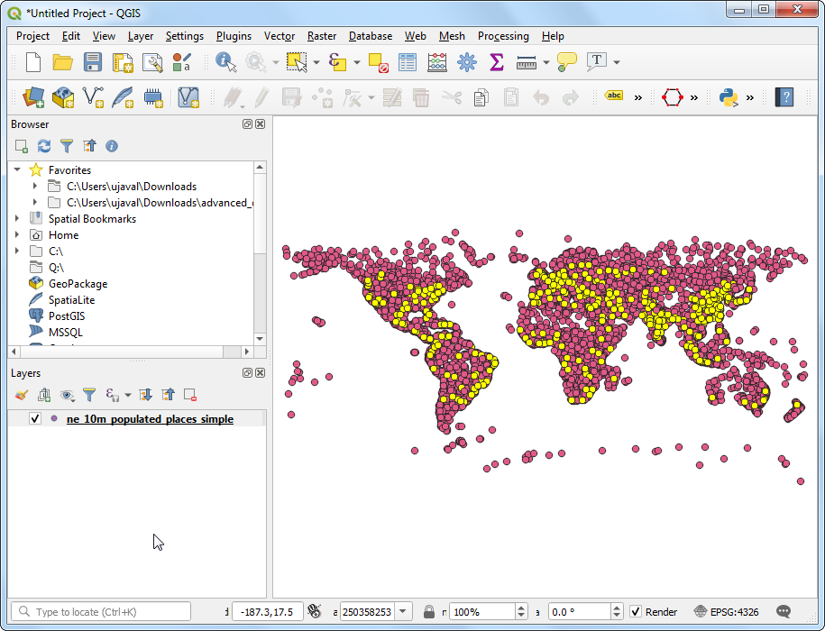

Ujaval Gandhi
Ujaval GandhiDelo z atributi (QGIS3)¶
Podatki v GIS-u imajo dva dela: grafičnega in atributnega. Atributi so nabor strukturiranih podatkov o posameznem grafičnem objektu. V tej vadnici bomo spoznali, kako v QGIS-u pregledujemo atribute in z njimi naredimo enostavne poizvedbe.
Pregled naloge¶
Nabor podatkov za to vadnico vsebuje informacije o velikih mestih po svetu. Naredili bomo poizvedbo, s katero bomo poiskali vsa glavna mesta, ki imajo več kot 1 milijon prebivalcev. Rezultat bom shranili v datoteko GeoJSON.
Česa se bomo še naučili¶
Izbira značilk sloja z uporabo izrazov.
Uporabo orodjarne Attributes.
Izvoza izbranih objektov v sloju.
Pridobivanje podatkov¶
Natural Earth provides a Populated Places dataset. Download the simple (less columns) dataset.
For convenience, you may directly download a copy of the dataset from the link below:
ne_10m_populated_places_simple.zip
Vir podatkov [NATURALEARTH]
Postopek¶
V QGIS Browserju poiščite datoteko
ne_10m_populated_places_simple.zipin jo razširite. Izberite datotekone_10m_populated_places_simple.shpin jo povlecite v glavno okno.

QGIS bo prebral izbrani podatkovni sloj
ne_10m_populated_places_simplein na karti se bodo prikazale točke z naseljenimi mesti po svetu. Privzeti prikaz podaja geometrijo sloja GIS. Vsaka točka ima tudi več atributov. Oglejmo si jih. Izberite orodjarno Attributes Toolbar. Ta orodjarna vsebuje orodja za poizvedbe, pregledovanje, izbiranje in spreminjanje atributov sloja.

Opomba
Če orodjarne ne vidite, jo lahko aktivirate v .
Kliknite gumb Identify v orodjarni Attributes Toolbar. Ko je orodje izbrano, kliknite katerokoli točko na karti. Atributi izbrane točke se pokaže v plošči Identify Results panel. Oglejte si atribute različnih točk, na koncu zaprite okno z gumbom Close.

Bolj primerno kot pregledovaje atributov posamezne točke, je pregledovanje vseh skupaj v tabeli. Kliknite gumb Open Attribute Table v orodjarni Attributes Toolbar. Tabelo lahko odprete tudi z desnim klikom na sloj
ne_10m_populated_places_simplein izbiro Open Attribute Table.

Premaknite se vodoravno in poiščite stolpec pop_max. To polje vsebuje podatek o številu prebivalcev v posameznem kraju. Če kliknete na ime polja podatke v uredite po vrsti od najmanjšega do največjega, z dodatnim klikom od največjega do najmanjšega.

Zdaj smo pripravljeni, da naredimo poizvedbo po atributih. QGIS za poizvedbe uporablja izraze, ki so podobni tistim v SQL. Kliknite gumb Select features using an expression.

V oknu Select By Expression razširite razdelek Fields and Values in dvakrat kliknite oznako
pop_max. Opazili boste, da je polje dodano v del za izraze na dnu. Če niste prepričani glede vrednosti v polju, lahko kliknete gumb All Unique, in videli boste katere vrednosti so v podatkovni zbirki. Pri tej nalogi iščemo vsa mesta, ki imajo prebivalstvo nad 1 milijonom. Dokončajte izraz tako kot je spodaj, kliknite Select Features in nato Close.
"pop_max" > 1000000
Opomba
Pri izrazih v QGIS-u besedilo z dvojnimi narekovaji označuje polje (atribut), besedilo z enojnimi narekovaji pa pomeni niz znakov (string).
Opazili boste, da je v atributni tabeli zdaj nekaj vrstic izbranih. Okno z oznakami se prav tako spremeni in kaže število izbranih objektov.

Zaprite okno atributne tabele in se vrnite v glavno okno QGIS-a. Opazili boste, da je del točk zdaj označenih rumeno. To je rezultat poizvedbe (query), izbrane točke pa predstavljajo mesta, kjer je atribut
pop_maxvečji kot1000000.

Spremenimo poizvedbo tako, da mora biti mesto tudi glavno mesto (capital), poleg tega, da ima več kot 1 milijon prebivalcev. Urejevalnik izrazov najhitreje dobimo, če kliknemo gumb Select Features by Expression v orodjarni Attributes Toolbar.

Polje, ki vsebuje podatek o glavnih mestih, se imenuje adm0cap. Vrednost
1pomeni, da gre za glavno mesto. Prvotnemu izrazu dodamo nov pogoj z uporabo operatorja and. Vpišite izraz tako kot je podano spodaj in kliknite Select Features in nato Close.
"pop_max" > 1000000 and "adm0cap" = 1
Vrnite se v glavno okno QGIS-a. Nabor izbranih točk bo zdaj še manjši. To je rezultat druge poizvedbe in kaže samo glavna mesta, ki m+imajo več kot 1 milijon prebivalcev.

Izbrane objekte bomo izvozili kot nov sloj. Desno kliknite sloj
ne_10m_populated_places_simplein v meniju izberite

V polju Format izberite format, ki vam ustreza. Za to nalogo bomo izbrali
GeoJSON. GeoJSON je besedilni zapis, ki je široko uporaben v spletnem kartiranju. Kliknite gumb … poleg File name in vpišitepopulated_capitals.geojsonkot ime izhodne datoteke.

Vhodni podatki imajo več stolpcev. Pri izvozu lahko izberete samo del (subset) prvotnih stolpcev. Razširite razdelek Select fields to export and their export options. Kliknite Deselect All in izberite polji
nameinpop_max. Kliknite OK.

Nov sloj
populated_capitalsse bo naložil v QGIS. Slojne_10m_populated_places_simplelahko skrijete s klikom na polje pred njem. Prikazane bodo samo točke novo ustvarjenega sloja.

If you want to give feedback or share your experience with this tutorial, please comment below. (requires GitHub account)